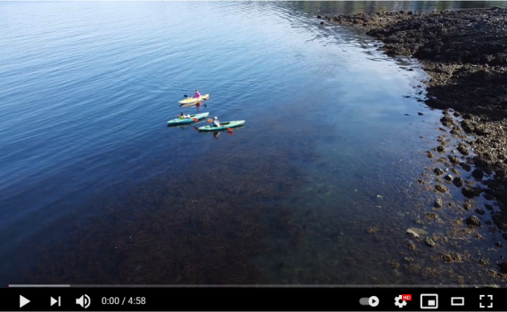

-
ATENDIMENTO
É importante questionar o quanto a mobilidade dos capitais internacionais maximiza as possibilidades por conta das diretrizes de desenvolvimento para o futuro. Percebemos, cada vez mais, que o surgimento do comércio virtual.
LEIA MAIS -
COMPATIBILIDADE
É importante questionar o quanto a mobilidade dos capitais internacionais maximiza as possibilidades por conta das diretrizes de desenvolvimento para o futuro. Percebemos, cada vez mais, que o surgimento do comércio virtual.
LEIA MAIS -
AVALIAÇÃO
É importante questionar o quanto a mobilidade dos capitais internacionais maximiza as possibilidades por conta das diretrizes de desenvolvimento para o futuro. Percebemos, cada vez mais, que o surgimento do comércio virtual.
LEIA MAIS
-
+850 clientes
-
+200 destinos
-
+370 atividades
-
+980 horas
Possibilidades de Atividades
Nunca é demais lembrar o peso e o significado destes problemas, uma vez que a complexidade dos estudos efetuados promove a alavancagem de todos os recursos funcionais envolvidos. O empenho em analisar o surgimento do comércio virtual assume importantes posições no estabelecimento das posturas dos órgãos dirigentes com relação às suas atribuições.
